First Glance - 初见印象
题目给了你一个星座坐标的数据集，让我们重新画一下星座，然后建议我们用LLM给这些星座取名，赋上新的意义。
核心任务分解：
- 数学部分：在球坐标系里投影上这些星的坐标，考虑不同纬度，应该有一些数学上的推理
- 聚类分析：要把天空中的一些区域用聚类的方式划分出来，形成"星座"
- 创意命名：根据坐标、形状进行微调，生成有意义的星座名字
上手实践
先试一下最简单的一步，把星座的数据plot出来看一下。
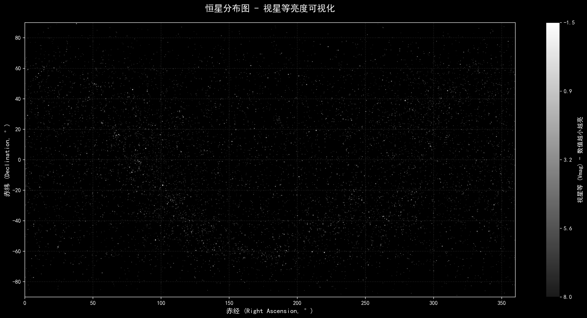
AI表现得太过好了，他已经考虑到了不同星等的亮度问题了，用灰度和像素数做了类似曝光的渲染。 作为对比，让我们来看看如果只是每个坐标上点一个点会如何：
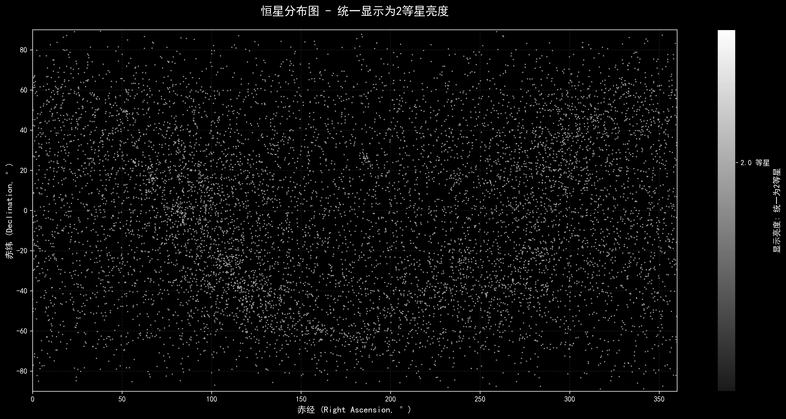
可以想象最终如果我们写成文章的话，大概会用以下的形式来做展示：
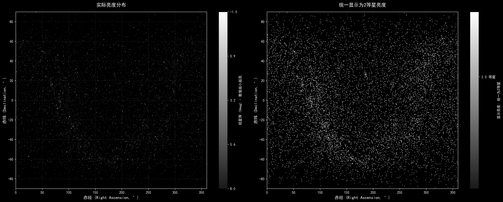
聚类算法实现
图里的点实在太多了，虽然可以聚类，但是点太多也不方便形成星座。 粗暴地筛选所有的3等星以上（一般视力情况下能看清的星等）先画出来看看效果。
技术方案：
选定了聚类算法后我们可以试着用最小生成树的方式来找星座：把距离最近的点先连起来。
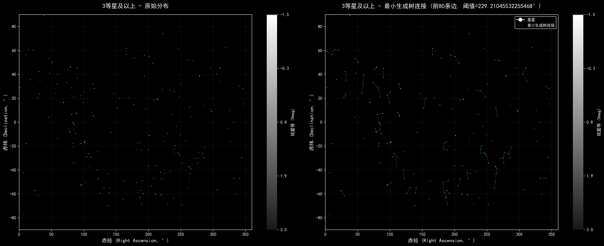
实际上每晚上你不可能看到整个的球体，所以我们简单把天空分成4份：
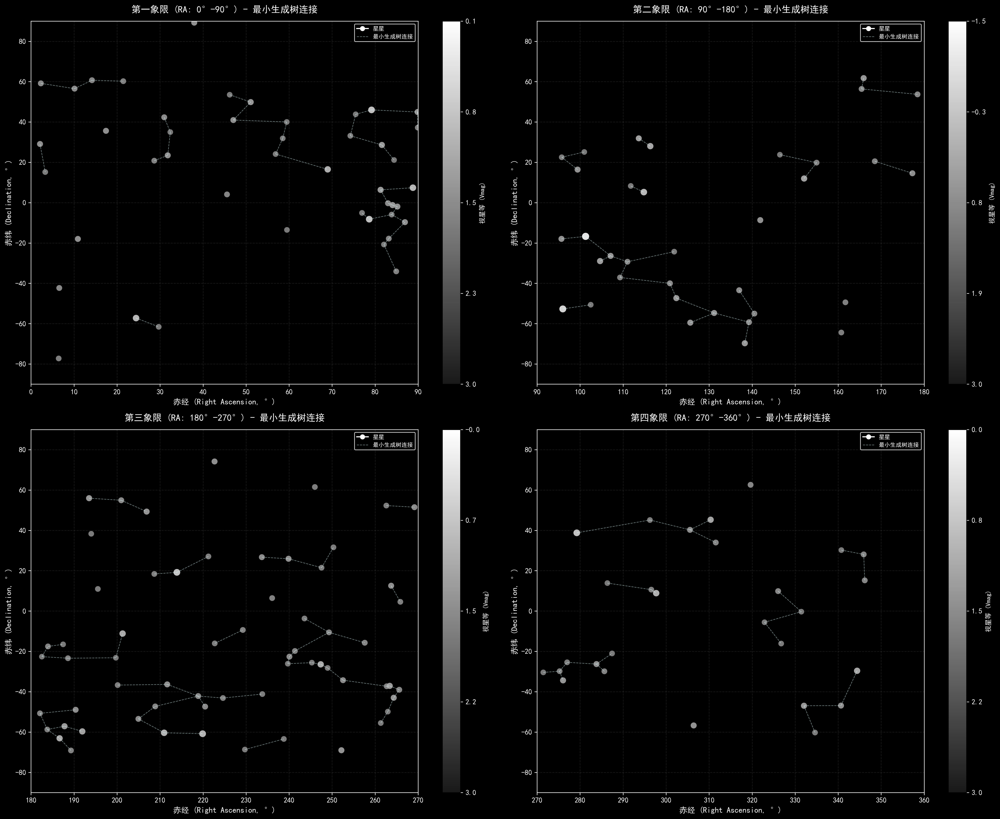
加强版方案（课上没做）
以上工作显然没考虑在球体里的投影，也没有考虑纬度（接近地平线 vs 接近天顶）， 没有考虑银河（由一大堆低视等的星星形成的暗带），所以可以先对这些部分做微调。
可改进的方向：
- 颜色考虑：大部分星是白色的，有些星是红色的，会被赋予不同的意义
- 随机生成树：在星座已经确定的情况下，不要用最小距离来生成，产生不同的星座连线方式，并加以解释
- AI取名：建议是先画线再让AI想象，并且画上插画
球坐标系投影公式
考虑球坐标系到平面的投影，我们可以使用立体投影（Stereographic Projection）：
给定球坐标 $(r, \theta, \phi)$，其中 $\theta$ 是极角，$\phi$ 是方位角，投影到平面的坐标为：
$$x = \frac{2r\sin\theta\cos\phi}{1 + \cos\theta}$$ $$y = \frac{2r\sin\theta\sin\phi}{1 + \cos\theta}$$这种投影保持了角度，但会扭曲距离和面积。
AI生成效果展示
使用AI工具对星座进行创意解释和可视化：
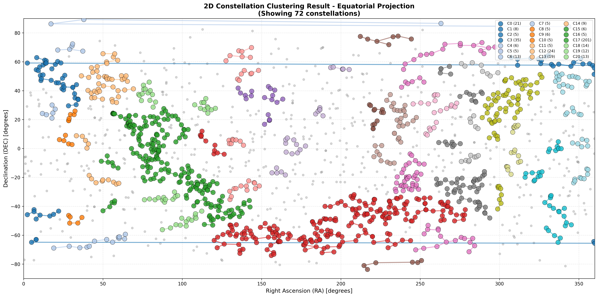
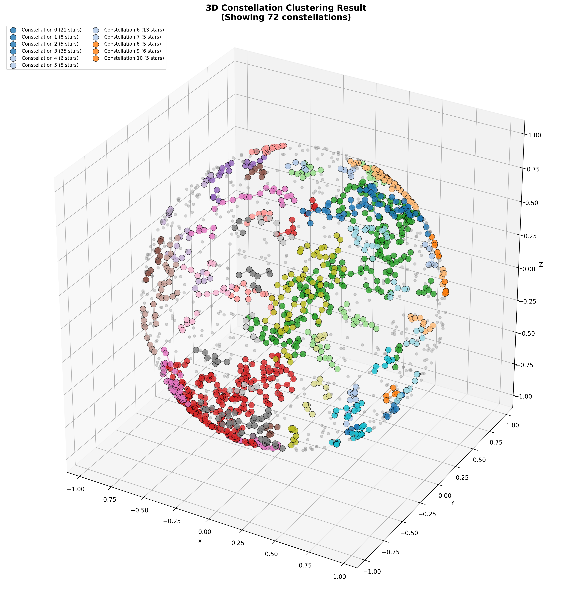
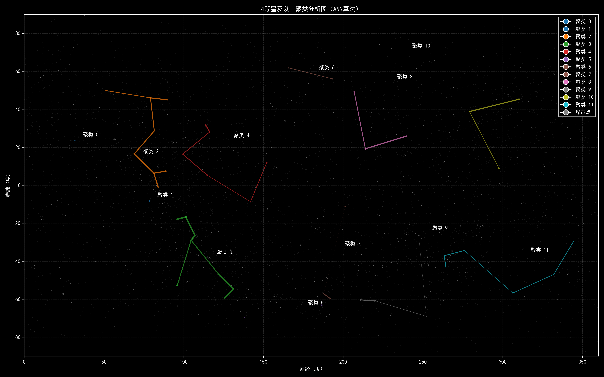
生成的星座展示
以下是我们通过聚类算法和创意命名生成的一些新星座：
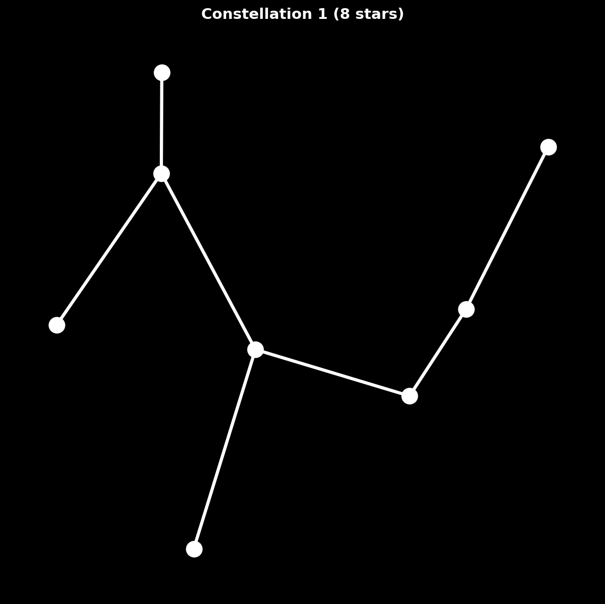
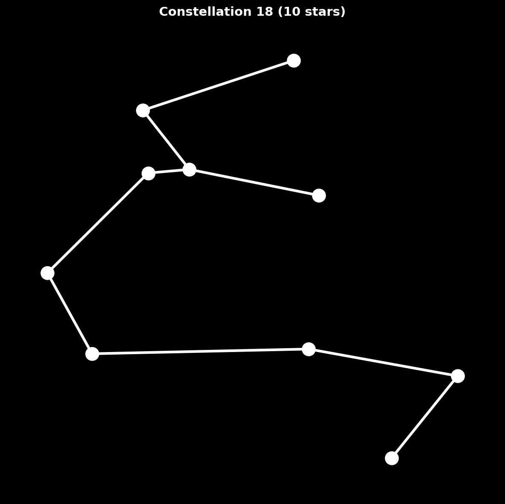
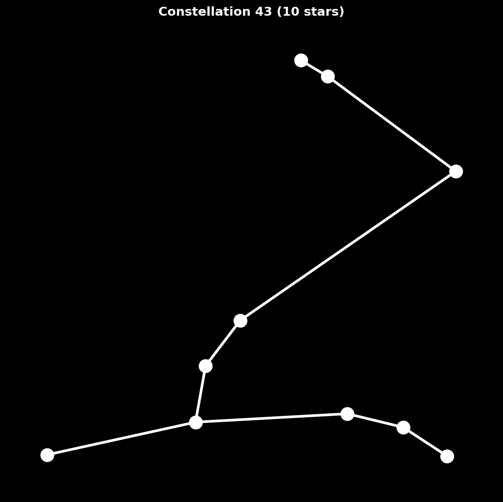
从3D天球到2D视野 - 投影原理
🌍 为什么需要投影？
想象一下：所有的星星都在一个巨大的球面上（天球），而我们站在球心观察。 当我们抬头看天空时，只能看到半个球面，而且我们的眼睛接收到的是一个平面图像。 所以需要把球面上的点"投影"到平面上。
简单类比
就像地球是球形的，但我们的地图是平面的。把地球画在纸上，就需要投影！ 最常见的例子是世界地图 - 格陵兰岛看起来和非洲差不多大，但实际上非洲面积是格陵兰岛的14倍！
交互式投影模拟器
拖动滑块来改变观察位置，看看星星在你的视野中如何移动：
恒星光谱类型（主星序）
💡 为什么星轨不是同心圆？ 因为地球自转轴倾斜，不同纬度的观察者看到的星星运动轨迹不同。 只有在北极点，星轨才是完美的同心圆。在其他纬度，星轨会呈现椭圆或抛物线形状。
左侧：天球侧视图
• 从侧面看整个天球
• 展示所有星星的3D分布
• 红点是观察者（地球中心）
• 蓝色扇形是当前视野范围
右侧：观察者视角
• 你站在地球上看到的天空
• 中心的十字表示“当前视线的正前方”（默认指向天顶附近）
• 圆的边缘是当前视野下的“地平线边界”
• N/S/E/W 标记方位
📐 地平坐标系投影的数学原理
第一步：赤道坐标系 → 地平坐标系
星星的原始位置在赤道坐标系中：
- 赤经（RA, α）：天球赤道上的角度，0°到360°
- 赤纬（Dec, δ）：从天球赤道向南北的角度，-90°到+90°
第二步：坐标转换公式
给定：
• 观察者纬度 φ (latitude)
• 时角 H = 观察方位角 - 赤经
• 星星赤纬 δ (declination)
计算高度角（Altitude）：
sin(Alt) = sin(δ)×sin(φ) + cos(δ)×cos(φ)×cos(H)
计算方位角（Azimuth）：
cos(Az) = [sin(δ) - sin(Alt)×sin(φ)] / [cos(Alt)×cos(φ)]
sin(Az) = -cos(δ)×sin(H) / cos(Alt)
Az = atan2(sin(Az), cos(Az))
第三步：立体投影（Stereographic Projection）
将球面坐标投影到平面，保持角度不变（保角投影）：
天顶角： Z = π/2 - Alt （从天顶算起的角度）
投影半径： r = R × 2 × tan(Z/2) / tan(FOV/2)
其中 R 是屏幕半径，FOV 是视野范围
屏幕坐标：
X = 中心X + r × sin(Az)
Y = 中心Y - r × cos(Az)
为什么这个投影好？
- 保角性：星座的形状不会被扭曲（虽然大小会变）
- 圆形保持：天球上的圆在投影后仍是圆（或直线）
- 北极星在中心：在北极点观察时，所有星轨是完美同心圆
🎯 验证投影正确性：
- 纬度90°（北极）→ 星星绕天顶做同心圆运动 ✓
- 纬度0°（赤道）→ 星星垂直升降 ✓
- 中纬度 → 倾斜的圆弧轨迹 ✓
🌌 关于星轨的形成
为什么在不同纬度看到的星轨形状不同？
- 北极点（纬度90°）：
所有星星围绕天顶（北极星方向）做完美的圆周运动，形成同心圆星轨。
这是因为地球自转轴正好垂直向上。 - 赤道（纬度0°）：
星星从东方升起，垂直向上运动，然后从西方落下，轨迹是直线。
北极星在地平线上，天球赤道垂直于地平线。 - 中纬度（如纬度30°-60°）：
星轨是倾斜的圆弧，越靠近北极星越接近圆形，越远离则越接近直线。
这就是为什么你看到的不是完美的同心圆。
💡 小贴士：试着把纬度滑块调到90°（北极），你会看到所有星星围绕中心点旋转。 然后调到0°（赤道），星星会垂直移动。这就是地球不同位置看到的星空运动！
技术实现要点
关键算法选择：
- 聚类算法：
- DBSCAN - 适合发现任意形状的星座
- K-means - 快速但限于凸形星座
- 层次聚类 - 可以得到不同粒度的星座
- 连接策略：
- 最小生成树 (MST) - 保证连通性
- Delaunay三角剖分 - 自然的邻近连接
- 基于视觉的连接 - 考虑人类视觉习惯
示例代码框架
# 星座聚类示例
def create_constellations(stars_df, n_clusters=88):
"""
将星星聚类成星座
"""
# 1. 筛选可见星等
visible_stars = stars_df[stars_df['magnitude'] <= 3.0]
# 2. 转换为笛卡尔坐标
coords = spherical_to_cartesian(
visible_stars['ra'],
visible_stars['dec']
)
# 3. 聚类
clusters = DBSCAN(eps=0.1, min_samples=3).fit(coords)
# 4. 为每个聚类生成连接
for cluster_id in np.unique(clusters.labels_):
cluster_stars = coords[clusters.labels_ == cluster_id]
mst = minimum_spanning_tree(cluster_stars)
draw_constellation(mst)
return clusters
总结与反思
项目亮点：
- 跨学科融合：结合了天文学、数学、计算机科学和艺术创意
- AI应用创新：利用LLM进行创意命名和故事生成
- 可视化技术：多种渲染方式展示星空之美
- 算法比较：不同聚类和连接算法的效果对比
这个题目很好地展示了如何将传统的天文学知识与现代计算方法结合。 通过重新定义星座，我们不仅学习了球坐标系、聚类算法等技术知识， 还激发了创造力，赋予了夜空新的文化意义。
未来可以进一步考虑：
- 加入时间维度，展示不同季节的星座变化
- 考虑不同文化背景下的星座命名
- 开发交互式Web应用，让用户自己创建星座
- 结合AR技术，在真实夜空中展示新星座